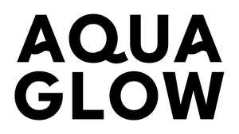

Trade Mark Journal No.2025/011 14 March 2025
UK00004167316 28 February 2025 (5,32)
Mark 1
AQUA GLOW
Mark 2

- Class 5
- Dietary supplements and vitamins containing collagen for promoting healthy skin, hair, nails, immunity, energy, hydration and wellness benefits; Dietary supplements and vitamins for boosting collagen; Food supplements containing collagen for promoting healthy skin, hair, nails, immunity, energy, hydration and wellness benefits; Protein drinks in the nature of liquid protein supplements containing collagen for promoting healthy skin, hair, nails, immunity, energy, hydration and wellness benefits; Nutritional supplements in liquid form containing collagen, zinc, magnesium, hyaluronic acid, and vitamins for supporting skin health, hydration, and overall wellness; Dietary supplement drinks enriched with collagen, vitamins and minerals, including zinc, magnesium, and vitamins B, C, and D, formulated to support immune function and enhance energy levels; Medicated drinks incorporating collagen and essential nutrients to improve skin elasticity, hydration, and radiance; Nutritional supplement beverages formulated with beauty enhancing ingredients such as collagen in order to improve skin, hair, and nail health; Vitamin and mineral preparations in the form of hydration supplement powder to form a drink containing electrolytes and adaptogens; Powder containing collagen extracts, vitamins and supplements to form a hydration drink in sachet form.
- Class 32
- Non-alcoholic functional drinks containing fruit juice essences formulated for beauty and wellness, including beverages designed to promote skin hydration, nail strength, and hair vitality; Soft drinks enhanced with collagen and essential nutrients for hydration and energy; Protein drinks, namely, beauty beverages in the nature of aerated water, bottled water, and soft drinks containing collagen for promoting healthy skin, hair, nails, immunity, energy, hydration and wellness benefits; Nutritionally enhanced mineral and aerated waters; Non-alcoholic carbonated beverages with added vitamins and minerals for promoting overall wellness and skin nourishment; Ready-to-drink non-alcoholic beverages containing collagen and superfood extracts to support hydration and skin vitality; Fruit-flavoured soft drinks fortified with collagen and essential nutrients for a function; Functional sparkling waters with added health benefits, including skin supporting nutrients and immune-enhancing vitamins; Shot-sized beverages containing extracts of collagen; Non-alcoholic beverages containing collagen.
AQUATHENA LTD
Representative: Seven Legal